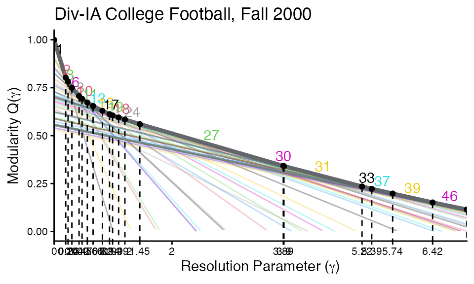
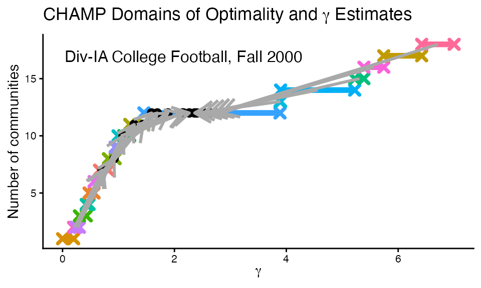

CHAMP_football.Rmd
library(ideanet)
#> Loading required package: igraphdataThis vignette takes a deeper dive into using the framework of CHAMP and maps on the CHAMP set to find communities aligned with the conference structure in the network of Division I-A college football games from the Fall 2000 season. If you haven’t already done so, you will want to first look at the CHAMP vignette to understand the commands used here.
These functions, as part of the broader IDEANet project, are supported by the National Science Foundation as part of the Human Networks and Data Science - Infrastructure program (BCS-2024271 and BCS-2140024).
If you use these functions in your work, please cite
In addition to this vignette, we recommend you look at the CHAMP_karate vignette, which demonstrates this pipeline on the karate club network.
A favorite example for demonstrating the need for a resolution
parameter is the network of the (then-so-called) Division I-A college
football games from the Fall 2000 season. This example was introduced by
Girvan and Newman (2002). The GML file for this example can be
downloaded (along with a bunch of other interesting examples) from Mark
Newman’s “Network data” web page at http://www-personal.umich.edu/~mejn/netdata/. We have
directly included this football data in
ideanet with permission from Michelle Girvan and Mark
Newman.
football
igraph::plot.igraph(football, main="Div-IA College Football, Fall 2000")We can now run the three steps of this framework on the football data as follows.
football_partitions <- get_partitions(football, n_runs = 500, seed = 115)
football_partitions <- CHAMP(football, football_partitions,
plottitle="Div-IA College Football, Fall 2000")
football_partitions <- get_CHAMP_map(football, football_partitions,
plotlabel="Div-IA College Football, Fall 2000")But if we were to run the commands using default parameters like
above, we would find that the fixed point of the iterative map on the
CHAMP set is the partition that is optimal at the largest values of
in the default range considered. (You can see this either by running the
above manually, or you will see it in what follows now.) This is a sign
to us that we might want to consider even larger values of
,
which we can easily do by changing gamma_range from its
default in the call to get_partitions as follows. Note that
this changes the resulting set of football_partitions
obtained, which then get passed to CHAMP and
get_CHAMP_maps.
football_partitions <- get_partitions(football, n_runs = 500,
gamma_range = c(0,7), seed = 115)
#>
#> [1] "63 unique partitions generated between cluster_leiden() and comm_detect()"
football_partitions <- CHAMP(football, football_partitions,
plottitle="Div-IA College Football, Fall 2000")
#> [1] "20 partitions in the CHAMP set (i.e., on the upper envelope of Q v. gamma)"
football_partitions <- get_CHAMP_map(football, football_partitions,
plotlabel="Div-IA College Football, Fall 2000")
#> [1] "Partition # 27 (with 12 communities) is a fixed point of the iterative map"
print(football_partitions$CHAMPsummary)
#> starting_gamma ending_gamma partition_num num_communities next_gamma
#> 1 0.0000000 0.1974433 1 1 NA
#> 2 0.1974433 0.2369082 2 2 0.7084195
#> 3 0.2369082 0.3016677 3 2 0.7272126
#> 4 0.3016677 0.4232810 6 3 0.9200643
#> 5 0.4232810 0.4741728 8 4 1.0810600
#> 6 0.4741728 0.5634191 10 5 1.2812752
#> 7 0.5634191 0.6611303 11 6 1.4417807
#> 8 0.6611303 0.8192058 13 7 1.5910087
#> 9 0.8192058 0.9401841 15 8 1.6942545
#> 10 0.9401841 0.9924035 17 9 1.8833054
#> 11 0.9924035 1.0946429 19 10 2.1408834
#> 12 1.0946429 1.2010188 18 10 2.1621819
#> 13 1.2010188 1.4539848 24 11 2.2661365
#> 14 1.4539848 3.8879493 27 12 2.3613840
#> 15 3.8879493 3.8982512 30 13 2.4045313
#> 16 3.8982512 5.2231953 31 14 2.5260029
#> 17 5.2231953 5.3876953 33 15 2.6296108
#> 18 5.3876953 5.7423888 37 16 2.7352003
#> 19 5.7423888 6.4205289 39 17 2.7463360
#> 20 6.4205289 7.0000000 46 18 2.8434425
#> next_partition_num next_num_communities segment_length gamma_range
#> 1 NA NA 0.27922693 0.19744325
#> 2 13 7 0.04449617 0.03946497
#> 3 13 7 0.07240720 0.06475952
#> 4 15 8 0.12901357 0.12161327
#> 5 19 10 0.05286144 0.05089175
#> 6 24 11 0.09136097 0.08924636
#> 7 24 11 0.09935550 0.09771117
#> 8 27 12 0.16007498 0.15807552
#> 9 27 12 0.12225411 0.12097825
#> 10 27 12 0.05262448 0.05221944
#> 11 27 12 0.10278472 0.10223937
#> 12 27 12 0.10692717 0.10637595
#> 13 27 12 0.25410836 0.25296601
#> 14 27 12 2.44370036 2.43396444
#> 15 27 12 0.01034086 0.01030193
#> 16 27 12 1.32921094 1.32494407
#> 17 27 12 0.16495834 0.16450005
#> 18 27 12 0.35554284 0.35469345
#> 19 27 12 0.67973763 0.67814018
#> 20 27 12 0.58064175 0.57947106Now we see that everything in the figure above flows towards the
12-community partition (partition_num 27) from both below
and above, and we emphasize that the range of
for which this is the optimal partition does not straddle the default
value. While this 12-community partition fixed point appears to be the
same fixed point partition we would have found above with the restricted
default gamma_range, it is only because we extended the
range of
considered that we can see that the maps point towards this fixed point
from both above and below. It can be important in developing your CHAMP
and iterative map results that you consider
values sufficiently above and below the fixed points that you find.
(Indeed, it is possible for the code to throw an error if the map
attempts to go outside the provided gamma_range.)
As with the karate club, we highlight that the result here is
different from that found in Newman (2016), where the number of
communities is pre-specified to be 11 for this network. In contrast, by
allowing for different possible numbers of communities, the fixed point
identified here has 12 communities. We also note that extending the
gamma_range beyond its default here identified a
14-community partition (partition_num 31) that is the
optimum over a wide range of
.
While this partition is not a fixed point — indeed, it points to the
12-community partition — it might be interesting in practice to further
consider such a partition, since it has one of the largest domains of
optimality in gamma. (We will briefly return to both the 11-community
and the 14-community partitions below.)
To finish this example, we look more closely at these communities we found to demonstrate that they are useful for understanding this data set. That is, having used the CHAMP and iterative map framework to find only a single fixed-point partition, and to have it not be at the default resolution, we ask ourselves, what are these communities in the fixed-point partition?
colrs <- c("#543005", "#8C510A", "#BF812D", "#DFC27D", "#F6E8C3", "#C7EAE5", "#80CDC1", "#35978F", "#01665E", "#003C30")
igraph::V(football)$color <- colrs[igraph::V(football)$value+1]
igraph::plot.igraph(football,mark.groups = football_partitions$partitions[[27]],
vertex.label=NA, vertex.size=5)
table(igraph::V(football)$value,
igraph::membership(football_partitions$partitions[[27]]))
#>
#> 1 2 3 4 5 6 7 8 9 10 11 12
#> 0 0 9 0 0 0 0 0 0 0 0 0 0
#> 1 0 0 0 0 0 0 0 0 8 0 0 0
#> 2 0 0 11 0 0 0 0 0 0 0 0 0
#> 3 0 0 0 12 0 0 0 0 0 0 0 0
#> 4 0 0 0 0 0 0 0 0 0 0 9 1
#> 5 0 0 0 0 0 1 1 0 2 1 0 0
#> 6 0 0 0 0 0 0 13 0 0 0 0 0
#> 7 8 0 0 0 0 0 0 0 0 0 0 0
#> 8 0 0 0 0 10 0 0 0 0 0 0 0
#> 9 0 0 0 0 0 0 0 12 0 0 0 0
#> 10 0 0 0 0 0 4 0 0 0 3 0 0
#> 11 0 0 0 0 0 1 0 0 0 1 0 8Though it isn’t completely clear from the figure, the above table
indicates that this 12-community fixed-point partition is very well
aligned to the value labels in the data. This similarity
between labels is natural because value here denotes the
conferences that teams participated in (see https://en.wikipedia.org/wiki/Category:2000_NCAA_Division_I-A_football_standings_templates).
For example, we see in the table that Community 1 consists of all 8
teams with value=7 (this value corresponds to the old
Mountain West Conference). Continuing through the table, Community 2 is
all 9 teams with value=0 (the ACC), Community 3 is all 11
teams with value=2 (the Big Ten), Community 4 is all 12
teams with value=3 (the Big 12), Community 5 is all 10
teams with value=8 (the Pac-10) and Community 8 is all 12
teams with value=9 (the SEC).
Looking at a community here that is not perfectly aligned with the
value attribute, we find Community 7
igraph::V(football)$label[football_partitions$partitions[[27]]$membership == 7]
#> [1] "NorthernIllinois" "WesternMichigan" "Akron"
#> [4] "BallState" "BowlingGreenState" "Buffalo"
#> [7] "CentralMichigan" "Connecticut" "EasternMichigan"
#> [10] "Kent" "MiamiOhio" "Ohio"
#> [13] "Toledo" "Marshall"is the 13 teams of the Mid-American Conference (value=6)
along with independent Connecticut, who played a number of games against
these teams:
UConn_nbhd <- unlist(igraph::neighborhood(football,
nodes = which(igraph::V(football)$label=="Connecticut")))
igraph::V(football)$label[UConn_nbhd]
#> [1] "Connecticut" "Akron" "BallState"
#> [4] "BostonCollege" "Buffalo" "EasternMichigan"
#> [7] "Louisville" "MiddleTennesseeState"Note here that the igraph neighborhood includes the selected node (Connecticut). Note also that Connecticut played more than 7 games in 2000, but the other teams are not included in this data set because they were not Division I-A teams.
As one more interesting look at these communities, we see that Community 11
igraph::V(football)$label[football_partitions$partitions[[27]]$membership == 11]
#> [1] "EastCarolina" "Houston" "Louisville"
#> [4] "Memphis" "SouthernMississippi" "Tulane"
#> [7] "Army" "Cincinnati" "AlabamaBirmingham"aligns perfectly with the 9 teams in Conference USA, while Community 12
igraph::V(football)$label[football_partitions$partitions[[27]]$membership == 12]
#> [1] "FresnoState" "Rice" "SouthernMethodist"
#> [4] "Nevada" "SanJoseState" "TexasElPaso"
#> [7] "Tulsa" "TexasChristian" "Hawaii"aligns perfectly with the 9 teams in the Western Athletic Conference.
The apparent discrepancy between these memberships and the
value field is that TexasChristian (TCU) appears to be
misassigned by the value field to Conference USA
(value=4) instead of the WAC (value=11), which
also erroneously appears to include BoiseState from the Big West and
independent LouisianaTech.
Finally, as one last emphasis that sometimes partitions that are not
fixed points are still of potential interest, and having highlighted the
large-gamma-range partition_num 31, we compare this
14-community partition to the 12-community fixed point:
table(igraph::membership(football_partitions$partitions[[27]]),
igraph::membership(football_partitions$partitions[[31]]))
#>
#> 1 2 3 4 5 6 7 8 9 10 11 12 13 14
#> 1 8 0 0 0 0 0 0 0 0 0 0 0 0 0
#> 2 0 9 0 0 0 0 0 0 0 0 0 0 0 0
#> 3 0 0 11 0 0 0 0 0 0 0 0 0 0 0
#> 4 0 0 0 12 0 0 0 0 0 0 0 0 0 0
#> 5 0 0 0 0 10 0 0 0 0 0 0 0 0 0
#> 6 0 0 0 0 0 6 0 0 0 0 0 0 0 0
#> 7 0 0 0 0 0 0 7 0 7 0 0 0 0 0
#> 8 0 0 0 0 0 0 0 12 0 0 0 0 0 0
#> 9 0 0 0 0 0 0 0 0 0 8 0 0 0 2
#> 10 0 0 0 0 0 0 0 0 0 0 5 0 0 0
#> 11 0 0 0 0 0 0 0 0 0 0 0 9 0 0
#> 12 0 0 0 0 0 0 0 0 0 0 0 0 9 0You can see from this table that these two partitions are identical except for the differences in the splitting of the 12-community fixed point partition’s “Community 7” 14-node community into two 7-node communities, and breaking out two teams from “Community 9”. If you query these differences by team name, the splitting of Community 7 into two matches the split of the Mid-American Conference into its East and West divisions (grouping independent Connecticut in the West), while the two teams broken off from “Community 9” are independents Navy and NotreDame from the 8 teams of the Big East Conference.
Similarly, we again note that Newman (2016) specified 11 communities.
Our results above found an 11-community solution,
partition_num 24, optimal for
between 1.20 and 1.45, that maps to a
estimate of 2.27 (where the 12-community partition is optimal). Since
this estimated
matches the value in Table I of Newman (2016), we believe it is likely
the same partition found there and we compare it with the 12-community
fixed point:
table(igraph::membership(football_partitions$partitions[[27]]),
igraph::membership(football_partitions$partitions[[24]]))
#>
#> 1 2 3 4 5 6 7 8 9 10 11
#> 1 8 0 0 0 0 0 0 0 0 0 0
#> 2 0 9 0 0 0 0 0 0 0 0 0
#> 3 0 0 11 0 0 0 0 0 0 0 0
#> 4 0 0 0 12 0 0 0 0 0 0 0
#> 5 0 0 0 0 10 0 0 0 0 0 0
#> 6 0 0 0 0 0 6 0 0 0 0 0
#> 7 0 0 0 0 0 0 14 0 0 0 0
#> 8 0 0 0 0 0 0 0 12 0 0 0
#> 9 0 0 0 0 0 0 0 0 10 0 0
#> 10 0 0 0 0 0 0 1 0 0 4 0
#> 11 0 0 0 0 0 0 0 0 0 9 0
#> 12 0 0 0 0 0 0 0 0 0 0 9You can see from the above table that the two partitions are almost identical, with both of them providing excellent identification of the conference structure. The only differences all involve the 5 teams in Community 10 of the 12-community partition,
igraph::V(football)$label[football_partitions$partitions[[27]]$membership == 10]
#> [1] "CentralFlorida" "LouisianaTech" "LouisianaMonroe"
#> [4] "MiddleTennesseeState" "LouisianaLafayette"which, importantly, are all independents (along with Connecticut, Navy and Notre Dame). Querying further, it turns out that the 11-community partition groups independent CentralFlorida (UCF) in with the Mid-American Conference (plus Connecticut, as discussed previously) and puts these other four listed teams (all independents) with Conference USA. Is one of these solutions “better” than the other? Not necessarily. It is on the one hand a nice feature of the 12-community partition that these 5 independents are not assigned to any of the conference-aligned communities. But on the other hand, these assignments of these independent teams are not unreasonable given the scheduling quirks of independent teams.
In summary, we find that this 12-community fixed point partition is an excellent clustering of this network data set, with important qualities that are much better than what we would have obtained at the default resolution value ().
Girvan, M., and M. E. J. Newman. “Community Structure in Social and Biological Networks.” Proceedings of the National Academy of Sciences of the United States of America 99, no. 12 (June 11, 2002): 7821–26. https://doi.org/10.1073/pnas.122653799.
Gibson, Ryan A., and Peter J. Mucha. 2022. “Finite-State Parameter Space Maps for Pruning Partitions in Modularity-Based Community Detection.” Scientific Reports 12 (1): 15928. https://doi.org/10.1038/s41598-022-20142-6.
Newman, M. E. J. “Equivalence between Modularity Optimization and Maximum Likelihood Methods for Community Detection.” Physical Review E 94, no. 5 (November 22, 2016): 052315. https://doi.org/10.1103/PhysRevE.94.052315.
Pamfil, A. Roxana., Sam D. Howison, Renaud. Lambiotte, and Mason A. Porter. “Relating Modularity Maximization and Stochastic Block Models in Multilayer Networks.” SIAM Journal on Mathematics of Data Science, January 1, 2019, 667–98. https://doi.org/10.1137/18M1231304.
Peel, Leto, Daniel B. Larremore, and Aaron Clauset. 2017. “The Ground Truth about Metadata and Community Detection in Networks.” Science Advances 3 (5): e1602548. https://doi.org/10.1126/sciadv.1602548.
Weir, William H., Scott Emmons, Ryan Gibson, Dane Taylor, and Peter J. Mucha. 2017. “Post-Processing Partitions to Identify Domains of Modularity Optimization.” Algorithms 10 (3): 93. https://doi.org/10.3390/a10030093.